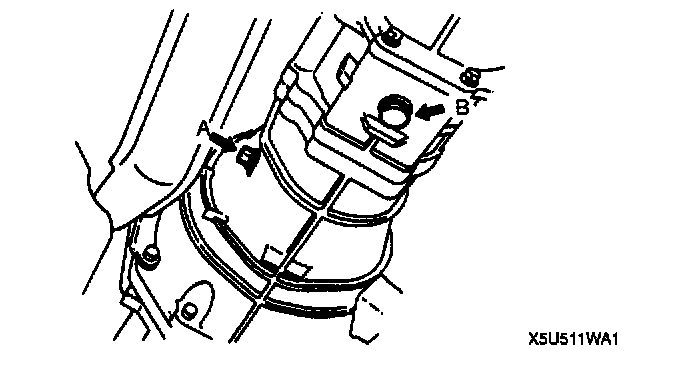
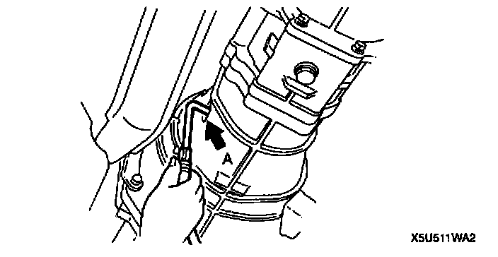
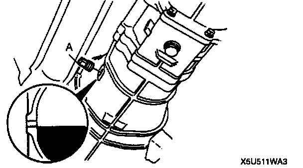

Fluid - M/T: Service and Repair
TRANSMISSION OIL REPLACEMENT
1. Remove the drain plug B (with washer) and the check plug A.
2. Drain the oil into a container.
3. Wipe all plugs clean.
4. Install the drain plug B (with new washer).
Tightening torque
B: 40 - 58 Nm (4.0 - 6.0 kgf-m, 29 - 43 ft. lbs.)

5. Add the specified oil from check plug A port until the level reaches the brim of check plug hole.
Specified oil
Grade:
API service GL-4 or GL-5
Viscosity:
SAE 75W-90 (All season) or
SAE 80W-90 (Above 10°C (50°F))
Capacity:
2.0 L (2.1 US qt. 1.8 Imp qt.)
6. Apply sealant to the threads of check plug A.

7. Install the check plug A.
Tightening torque
A: 25 - 39 Nm (2.5 - 4.0 kgf-m, 19 - 28 ft. lbs.)